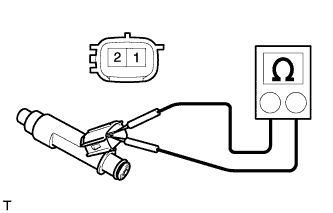
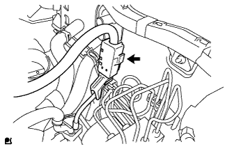
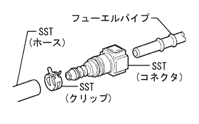
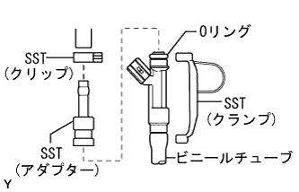
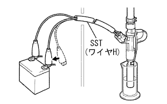
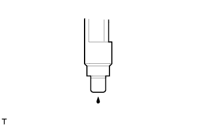

Fuel Injector Assembly (2AZ-FE) Inspection |
| 1. Fuel Injector Assembly |
Resistance Inspection
 |
Using SST (Toyota electrical tester), measure the resistance between the terminals.
| Tester Connection | Condition | Standard |
|---|---|---|
| 1 - 2 | Injector temperature 20°C | 11.6 to 12.4Ω |
Injection Volume Inspection
 |
Remove the EFI fuel pipe clamp No.1.
 |
Disconnect the fuel tube.
for reference. |
Connect SST to the fuel pipe (vehicle side).
Install the O-ring to the fuel injector.
 |
Install SST to the fuel injector.
 |
Set the fuel injector in a graduated cylinder.
Connect SST (EFI inspection wire H) to the fuel injector.
Connect SST (TaSCAN) to DLC3.
Following the screen display, select "Active Test" - "Circuit Relay" - "ON" to operate the fuel pump.
Connect SST (EFI inspection wire H) to the battery, inject fuel (15 seconds) 2-3 times and calculate the average value.
| Injection volume | Difference between each injector |
|---|---|
| 76 - 91 ml | 15 ml or less |
Leak Inspection
 |
In the condition above, check that no fuel leaks from the injector when SST (EFI inspection wire H) is disconnected from the battery.
Connect the fuel tube.
for reference.Install EFI fuel pipe clamp No.1.